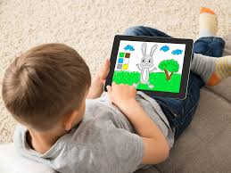
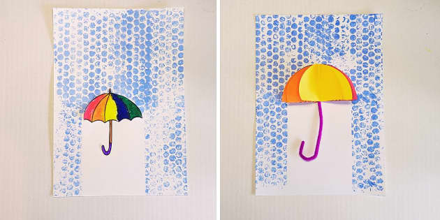
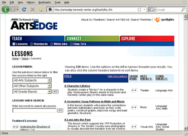

Art isn't just about keeping kids busy - it's how they make sense of their world. When little ones paint or draw, they're not just making pretty pictures. They're figuring out how to share their thoughts and feelings before they have all the words to say them. I've seen shy kids gain confidence when they proudly show their scribbles, and watched frustrated toddlers calm down while squishing clay. It's amazing how holding a crayon helps develop those tiny hand muscles they'll need for writing later on. And the problem-solving! You should see how determined they get when their block tower painting doesn't turn out how they imagined - they'll try again and again until it feels right. The best part? There's no wrong way to do art at this age. Whether they're mixing all the colors into "brown soup" or carefully drawing the same circle twenty times, they're learning something valuable.
Why Art Matters for Kids
"Every child is an artist. The problem is how to remain an artist once we grow up." - Pablo Picasso
What the Experts Say About Creativity
Learning Together
Kids learn so much when they create art side-by-side. You'll hear them say things like "How did you make that blue?" or "Let's make a giant rainbow together!" These little conversations are just as important as the art itself.
More Than Words
Children have a hundred ways to show what they know - through dance, building, painting, even the way they arrange their snack crackers. Art gives them another "language" when words aren't enough.
Different Smarts
Some kids think in pictures, others through movement. Art activities let each child shine in their own way, whether they're carefully drawing details or joyfully slapping paint with their whole body.
Stuff That Sparks Creativity
Classic Favorites:
- The messier the better: finger paints, playdough, chalk
- Treasures from nature: pinecones make great paint brushes!
- Anything from the recycling bin - cardboard tubes become telescopes
Tech Tools:
- Simple drawing apps where they can undo "mistakes"
- Let them photograph their creations - they love seeing their work on screen
- Light tables for magical tracing adventures

Art That Fits Their Stage
Tiny Explorers (0-2)
At this age, it's all about the sensory experience. Edible paint (yogurt + food coloring works great!) lets them taste-safe explore. Big crayons that are hard to break and giant paper that can't be missed are perfect.
Don't expect recognizable pictures - the joy is in the doing, not the result. Watch how fascinated they are just by seeing a mark appear when they drag a crayon!
Busy Builders (2-3)
These kiddos love collecting things. A nature walk becomes an art project when they glue their found leaves and sticks onto paper. Stamping with cut potatoes or sponges gives instant gratification.
Their drawings start to tell stories - that zigzag might be "a dinosaur eating toast" to them. Write down what they say about their art - it's fascinating to see how their minds work!
Storytellers (3-5)
Mirrors + art supplies = hours of fun as they explore what makes their face unique. After reading a book, ask "How would you draw the ending?" Their interpretations will surprise you!
This is when many kids start naming their colors intentionally ("This is grandma's favorite purple") and planning their creations more carefully.
Big Kids (6-8)
Digital tools can help reluctant artists gain confidence - the undo button is magical! Collaborative projects like murals teach teamwork and compromise ("Okay, you paint the sky and I'll do the dinosaurs").
They start caring more about realistic details ("How do you draw a dog that looks like a dog?"). Simple how-to-draw guides can help without squashing their creativity.
How We Can Help
Our job isn't to teach kids how to make perfect art, but to create spaces where they feel safe to experiment. Some things I've found helpful:
- Asking "Tell me about your picture" instead of "What is it?"
- Putting out unexpected materials (what will they do with cotton balls and pipe cleaners?)
- Displaying their work at eye level - it shows we value their efforts
- Noticing when they're proud and saying "You worked really hard on that!"

Bringing the Outdoors In
Nature's Art Supplies
Some of our favorite projects:
- Leaf rubbings: The magic when the veins appear never gets old
- Mud painting: Outside mess = easy cleanup!
- Rock families: They'll name each one and make up stories
Pro tip: Keep a "nature treasure box" for all their collected sticks and stones.
Earth Colors
Making natural paints becomes a science experiment:
- Crushed chalk + water = smooth paint
- Spinach leaves rubbed on paper leave green streaks
- Coffee grounds make great "dirt" texture
The kids love guessing what each natural item will create.

Ephemeral Art
Sometimes the process matters more than keeping the product:
- Patterns with acorns that squirrels might "rearrange" later
- Snow sculptures that will melt
- Sand drawings washed away by waves
Taking photos lets them keep the memory without cluttering the classroom.
Helpful Resources
First Nations Stories
Beautiful digital stories sharing cultural art traditions
Doodle Videos
Short, fun drawing tutorials even little kids can follow
Weather Art Ideas
Creative ways to explore seasons and weather patterns
Art Activity Ideas
Fresh project ideas when you're feeling stuck
Things to Think About
Observing Little Artists
- Which kids dive right in vs. those who watch first?
- How do they problem-solve when the glue won't stick?
- What unexpected connections do they make?
Capturing the Moment
- Jot down their funny explanations verbatim
- Photo series showing their process
- Note how art time helps different kids shine
Team Conversations
- How can we make art accessible for all abilities?
- Which materials get the most creative responses?
- What quiet spaces can we create for focused artists?
Further Reading
For those who want to dive deeper into why art matters for child development, these are great resources that informed our approach.